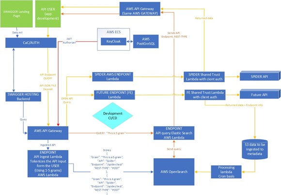

Mission
The Navy has disparate data across the enterprise, where authoritative data is hard to find. There are numerous programs across the Navy that reside on different databases, commands, data centers, and enclaves. Knowing where to access needed data can be challenging. Then, the time and effort needed to request and get approval for accessing the needed data is another hurdle. And then given access and technical limitations, manual exports and copies of data are often made and passed around, but the data quickly becomes obsolete. Moreover, similar types of data exist across different data sources yet have conflicting data and lead to confusion. Continue these evaluations a few times across multiple Naval programs, and it’s easy to see that the Navy has a problem with easily accessing accurate, up-to- date, and authoritative data, while also maintaining a firm cyber security implementation aligning with a principle of least privilege.
The Common API Framework will help address these obstacles. The vision is to provide a single secure access point designed with zero trust authentication in mind, which can be used for obtaining accurate and authoritative data.
To accomplish this mission, Forward Slope (FSI) will leverage its experience working on various Naval programs (i.e., NOBLE, SPIDER, MTC2, Application Arsenal), to create the Common API framework that provides the following Common Data Services:
• Identity and Access Management (IdAM) with Zero Trust security
• Ingestion
• Discovery and Dissemination
• Subscription
• Data Consumption
• Maintenance
Objective Architecture
Below is the PEO MLB DaTS Objective Architecture, provided by Georgia Tech Research Institute (GTRI) and the DaTS Architecture team. The DaTS Common API Framework will be a key component of the Data Environment and initially comprise of the four services of Discovery, Subscription, Ingestion, and Dissemination.
PEO MLB DaTS Objective Architecture
Technology Stack
The Common Data Services will be prototyped using several cloud services provided by Amazon Web Services (AWS). AWS was chosen for the following reasons:
• Enterprise Support: The Common API Framework will be hosted as an ashore solution accessible across the Navy. As such, the solution will need high availability, reliability, and performance, as well as dependable technical support and sustainment. Prototyping the Common API Framework in the AWS cloud-computing environment provides such features, while minimizing infrastructure setup and maintenance support from the Navy.
• Security: AWS is an industry-standard cloud-computing platform. More importantly, AWS’s GovCloud hosting is specifically designed for the U.S. Department of Defense (DoD) for complying with its Impact Level designations for housing Controlled Unclassified Information (CUI) and potentially sensitive information, and the Federal Risk and Authorization Management Program (FedRAMP) High baseline.
• Cost Considerations: AWS services follow a “pay as you go” model, allowing for the cost of the solution to scale accordingly to the needs of the Common API Framework. The AWS Pricing Calculator can help estimate monthly costs to host the solution. Moreover, AWS representatives can work directly with PEO MLB to help optimize costs and select appropriate services accordingly.
• Implementation Efficiency: Using AWS services for this prototype allows for implementation engineers to focus on developing the prototype, as opposed to maintaining the infrastructure supporting the prototype. As services are readily available for implementing, little setup and configuration is needed.
• Modern Technology:• AWS is a proven provider of cutting-edge technology, as it continuously improves and expands its services. This helps avoid products from reaching End-of-Life terms, instead focusing on sustainment and improvement of the Common API Framework.
These services will be implemented using AWS GovCloud within NIWC Pacific’s Naval Research and Development Environment (NR&DE) IL4 brokerage. They will be implemented using the following AWS services: API Gateway, Lambdas, Relational Database Service (PostgreSQL), Elastic Container Services (ECS), Code Commit, Code Deploy, AWS OpenSearch and S3.

Architecture using AWS Services
Target Demographics
The DaTS Common API will have three separate customers it can cater services to:
• Basic User: In this context, a “basic user” refers to an API developer. We cater to the developers who plan to use the API being built. Onboarding the user therefore is zero trust, and we want tight RBAC controls so information access is granted on a need only basis.
• Data Providers:
o API-provider: A backend data source that provides its own REST API. We need to consider RBAC here to allow specified user onboarding of API-provider info so information is granted on a need by need basis.
o Non-API-Provider: This term refers to a backend data source that does not have an API interface to be accessed, such as a database, an excel list, or even a book. Non-providers can be complex backends which need shared credentials, or can simply be uploaded data to discover/disseminate over. Some non-provider data sources might not have an owner, so we manage obscurity here by handing RBAC controls to the common API team when an owner is missing.
This customer context is used in the solutions outlined below.
Current Status
DaTS today in one sentence is: An Amazon Web Services (AWS) hosted suite of technology that provides: rudimentary role-based access control (RBAC), a discovery service that uses Natural Language Processing (NLP) to find desired API endpoints and a synchronization service to data sources without API integration.
In addition to AWS services, it will use Keycloak for identity access management, and Confluent (Apache Kafka) for message brokering services.
Current MVP Capabilities
The DaTS Common API today can provide (QaaS). The following capabilities are what the DaTS common API has already demonstrated today:
• Allows users to sign in via username and password with CAC authentication integration in progress.
• Can be pointed to any database where it has access (API tool still be developed to enable this capability)
• Scrape and categorize database contents and store in a non-aggregated meta-data repository via a in house developed algorithm
• Provides an API tool to query over categorized meta-data
• Provides an API tool to subscribe to changes in categorized meta-data
• Provides an API tool to deep dive into data by pulling targeted search data location and delve into its contents
The current tooling could be used to provide Query as a Service (QaaS) API where none exists with the capability being demonstrated by providing service to an OOMA database, a real NAVY legacy database. Our system allows for the Navy to search and discover data over this dataset and could do the same numerous other databases in the future, allowing for data discovery with authoritative data sources.
These capabilities could be recycled, via our API, in new applications built around data source access.
NON-API providers currently added and demonstrated already:
• OOMA/OIMA backend data (concept proven)
API Providers we have worked and integrated with today:
• SPIDER with API integration in progress
Projected Deliverable
The DaTS Common API Team is projecting to deliver the following:
• User signup & onboarding with CAC authentication
• Role based authentication
• Integrated Web-based authentication (Single Sign On)
• Audit logging and alerting
• ZTA security standards leveraging CAC authentication to access the DaTS Common API and extra authentication steps when facilitating M2M connections
• Ingestion flows for various user types (basic users, API Providers, Non-API Providers).
• Metadata catalogs to store data sources that can be leveraged for purposes of dissemination.
• Improved Natural Language Processing (NLP) based search algorithm for discovery service
• Event-driven Subscription service where user can sign up for updates on a search query
• Ingestion service allowing users to add new data sources
• CI/CD pipelines in place for faster feature rollout
• Serverless architecture for cost management
• Maintenance strategy for resources hosted on NRDE AWS GovCloud
IDAM with ZTA Feature
Werner Vogels, the CTO of Amazon, once said “Dance like nobody is watching. Encrypt like everyone is” in order to emphasize the importance of having strong security standards for the protection of sensitive data; Identity and Access Management (IDAM) practices will be utilized along with Zero Trust Architecture (ZTA) to enforce data protection.
When a new user or data source (API or non-API) provider wishes to use the DaTS Common API, they first need to go through an onboarding process. This process has not yet been smoothed out by the team, so today it would just be brokering a person-to-person relationship with the data provider and onboarding their as fit. That ZTA feature for data providers would need to be agreed upon by the Navy and would likely need to have all of them put infrastructure in place for true ZTA to work throughout the whole system. Only DaTS Common API users could be guaranteed a ZTA relationship. API and Non-API providers will still have strict shared trust and DaTS Common API RBAC controls once onboarded and would then be able to utilize the DaTS Common API RBAC controls to limit DaTS Common API user access to their data as desired.
Once all stakeholders are onboarded, the API Users would authenticate to data providers via a DaTS Backend Service.
API User Authentication
The security infrastructure is built using a combination of Keycloak and Lambda Authorizers hosted on the API Gateway in order to enforce role based access control (RBAC) and zero trust protocols. These measures are in place to ensure that regardless of how many eyes might land on the DaTS Common API, a strong security infrastructure will be in place to protect users and data.
RBAC and Zero Trust
A motto commonly associated with Zero Trust is “never trust, always verify” which the development team has taken to heart. CAC Authentication, where users need to supply a valid CAC with correct pin input, is in place as the primary layer of security.
Given the project requirements, it is recognized that there is no one size fits all solution for onboarding. We have therefore hashed out RBAC onboarding flows for the following stakeholder demographics:
• User
• Data Providers
o API-Providers
o Non-API-Providers
Splitting the onboarding into the three listed categories makes it so that, depending on the identity and type of user, appropriate levels of access can be granted.
Basic User Signup and Onboarding
Individuals and application builders wishing to leverage the DaTS Common API for their development purposes will be classified by our RBAC as “Basic Users.” To be onboarded, basic users will be required to supply a physical CAC containing valid credentials along with their name, email, and password that the system can reference to verify identities. Full zero trust protocols will be in effect for the verification of basic users meaning that these users will need to undergo the CAC authentication process in order to be granted the proper authorization clearances that allow for interactions with the tools provided by DaTS. The data-providers will determine the level of data exposure granted to basic users by leveraging Keycloak features to assign appropriate roles that indicate the amount of access that’s necessary.
Data Providers
Data providers will provide the main data products which users are enabled to access. Data providers fall into two categories:
API-Providers – A data source which has an API backend that the DaTS Common API will ingest API specifications to allow plain language queries over to recommend endpoints. The DaTS Common API can further be granted access to use specified data query endpoints opened by the API-Provider.
Non-API-Providers – A data source which does not have an API backend, which the DaTS common API is granted full access or limited access provided by the non-api-provider (i.e., A backend database login).
API-Providers Sign up and Onboarding
API-providers will be onboarded by providing their Open API specs for DaTS Common API ingestion, thus granting the DaTS common API the ability to perform discovery services over their endpoints and recommend endpoints given the limited knowledge of the API-providers Open API spec.
For advanced learning and better recommendations of a system, a partial trust relationship with API providers will be necessary for them to leverage the full DaTS Common API capability, so users are able to query their API-endpoints for data. API-providers can of course limit their exposure to the DaTS common API as much as they feel necessary on their own backend and would in addition be given DaTS RBAC control of DaTS users accessing their system. In order to foster trust with API-providers using the DaTS common API the following values will be emphasized:
• Security First
• User Vetting
• RBAC Enablement
• Maintain Integrity and Confidentiality
The API-provider onboarding flow will consist of the following steps:
• Establish process
o Trust Certificates
o ACL access for specified users
o RBAC for their customer base
• Establish security boundaries that API Providers can control in development
Non-API Provider Signup and Onboarding
Zero trust onboarding is not possible for non-API-providers as DaTS services would provide the full backend capabilities to the data sources for discovery and dissemination. Non-API-providers however will be given DaTS RBAC controls of their customer base just as an API-Provider is given.
Discovery and Dissemination
The DaTS Common API provides a discovery service that stakeholders can utilize to sift through APIs and other data sources for information they might be interested in or otherwise find helpful. At a high level the tooling for the discovery service can be broken down into the following:
• NLP powered Data Ingestion and Search Algorithms
• API Query as a Service
The major value proposition of our service is being able to not just search over documentation and specifications, but also the data itself and have the service learn from ingested data over time to constantly improve search results.
Data Ingestion
Natural Language Processing (NLP) libraries like spaCy and the Natural Language Toolkit (NLTK) are used in conjunction with Python to parse and augment the data from OpenAPI specs. This data is then fed into OpenSearch, where it is then used by the search algorithms to provide search results.
Although the OpenAPI spec file contains rich amounts of data, the wording of the queries the users make may not exactly match the wording within the OpenAPI spec file. Augmenting the data bridges the gap between user queries and the OpenAPI spec file data by providing more potential search hits with divergent queries. Data is currently augmented by factoring in the following:
• Tokenization: The summary of each API provided in the OpenAPI spec is broken up into n-grams.
• Lemmatization: Given the n-grams created from tokenization, reduce each word in the gram to its root.
• Synonyms: For each word in the n-grams, create combinations of sentences with words replaced with synonyms.
Search Algorithm
Once the data exists in OpenSearch, users can then query over it using the search algorithms. The algorithms leverage the built-in searching features of OpenSearch with the previously mentioned NLP libraries to generate comprehensive search results.
If the regular scoring method for the search algorithm cannot produce a good match, a similarity calculation algorithm is run comparing the user’s query with the highest frequency terms inside of the metadata catalogue; having this approach in place provides the DaTS Common API discovery service with multiple techniques it can use to produce quality search results in response to user queries.
Actions from the user will be factored in to improve the performance of the search algorithm. Feedback learning will be in place to improve search results based on how the user interacts with the data which will grow the knowledge graph. Data pulled back from an API is also processed using NLP techniques to enhance the metadata of the user’s query.
API Query as a Service
Data that is onboarded by a non-API provider can leverage the API Query as a Service feature which lets a user, assuming this user has the appropriate role and clearance in line with zero trust values, do the following:
• Given a site with no pre-existing API capabilities (one example is OOMA), the aforementioned site can be pointed towards any database where meets the access eligibility criterion.
• Given a database, scrape and categorize that database’s contents and store them a non- aggregated meta-data repository via an in house developed algorithm
• Given an in house developed API tool, the user can perform queries over categorized meta-data and deep dive into the query results by pulling targeted search data locations for purposes of dissemination.
The functionality provided by the API Query as a Service feature gives users the ability to interface with data, even if no prior API tooling for the source existed, dive into that data, and analyze it.
Subscription
If a user performs a search query that yields interesting results, they can subscribe to that query. Once subscribed, the user will be notified each time the results of that query are updated.
Subscription Architecture
An authenticated user will be able to send a subscription request through API Gateway which will trigger a Lambda function that logs the new subscription in Confluent. From there, Confluent will publish updates to the user as changes to the search query occur. This feature will be enhanced in the future to allow users to subscribe to actual datasets, thus synchronizing their systems with authoritative data sources.
Data Consumption
One of the value propositions for the DaTS Common API is its ability to consume various data sources and leverage them to provide valuable information for users working with our discovery service. As a part of that value proposition, the DaTS Common API will do the following for data consumption:
• Develop and document APIs, following the OpenAPI specification, to expose data for consumption
• Developers will be enabled through the use of a SWAGGER UI to build on top of a mature Open API specification schema.
• Create a UI for demonstration purposes
Swagger Concept
Swagger is used to aid developers in designing, building, and documenting their web APIs. In the Swagger web page, developers can glean knowledge about the details of an API, such as its parameters or responses, and execute a sample request using the API. DaTS will offer a Swagger backend for every onboard API-Provider, as well as the DaTS API Swagger page itself.
By giving developers an avenue to interact with the APIs through the DaTS Swagger page, developers can gain a thorough understanding of the APIs they are developing against, which will accelerate and enhance the development of their products.
Dats Swagger Page
Maintenance
The DaTS Common API will do the following for maintenance:
• NR&DE cloud developers must meet Cybersecurity Workforce (CSWF) Information Assurance Technical (IAT) requirements
• Maintain IA compliance using Assured Compliance Assessment Solution (ACAS) and Security Technical Implementation Guides (STIGs)
• Configure and maintain cloud networking and infrastructure
• Configure and monitor AWS resource usage
Added Enhancements
The DaTS Common API development has taken several steps to add additional capabilities for the streamlining of our development, cost management for our stakeholders, fast feature testing and deployment rollout for our users.
CI/CD Pipeline
CI/CD Pipelines allow for faster and more efficient implementation and shopping of features with Continuous Integration (CI) allowing for new features to seamlessly be integrated with the existing code base and Continuous Deployment (CD) providing a methodology for shipping the aforementioned code base for stakeholder usage.
 CICD Tools
CICD Tools
The following tools are used to implement our CI/CD Environment:
• AWS CodeCommit: Serves as a repository for the development team’s code base.
• AWS CodeBuild: Compiles, tests, and packages the code stored on CodeCommit. Fulfills
the “Continuous Integration” step.
• AWS CodeDeploy: Deploys the code as features for stakeholder usage. Fulfills the
“Continuous Deployment” step.
• AWS CodePipeline: Controls the “trigger” that automatically activates CodeBuild and
CodeDeploy when new code is uploaded to CodeCommit.
CI/CD pipelines are in place for endpoints connected to API Gateway so that every time the code repository on CodeCommit is updated, an image is pushed to the Elastic Container Registry (ECR), and deployed to AWS Lambda, a serverless compute service.
Serverless
The development team for the DaTS Common API has opted to go serverless in our solution implementation. Developing with serverless solutions lowers costs and requires less management from developers. Listed below are the various tools our architecture leverages to deliver a low cost and efficient solution.
AWS lamda
AWS Lambda is a serverless, event-driven compute service that lets you run code for virtually any type of application or back end service without provisioning or managing servers. Lambda is optimized to be fast and can respond to code execution requests immediately regardless of scale and is cost efficient by only charging when it is being used. Lambda will be used for the configuration of the DaTS Common API services into AWS. All Lambda functions are written using the Python programming language.
AWS Simple Storage Service (S3)
Amazon Simple Storage Service (S3) is an object storage service with the flexibility in scaling, data availability, performance, and security. S3 is the most supported cloud storage service offering a bundle of features such as easily managed data and access controls, query in place, and process on requests. S3 can be used for the implementation of the discovery and ingestion services by providing a location for to store the datastore indices.
AWS API GATEWAY
Amazon API Gateway is a fully managed service that allows developers to create, publish, maintain, monitor, and secure RESTful APIs at any scale. An API (Application Programming Interface) can be
thought of as a “door” an application can open to allow communication between itself and separate applications. Representational state transfer (REST) is an architectural pattern for implementing APIs that places value on scalability, uniform interface design, and security. For the Common API Framework requests will be screened by API Gateway before being distributed to the appropriate Lambda function for handling.
AMAZON Elastic Container Service (ECS)
Amazon Elastic Container Service (ECS) is Amazon’s container management service (like OpenShift, Docker, or Rancher). It is fully integrated with other AWS services, which allows for ease of development, deployment, and operations of the containerized components of our solution. For example, with AWS CloudFormation, the entire cluster, the containers within, along with supporting services (Amazon Application and Network Load Balancers, Amazon Relational Databases (RDS), Amazon Elastic File Storage (EFS), etc.), can all be deployed as code. This increases automation, decreases deployment time and simplifies configuration management. Integration with AWS code development and deployment tools (Code Commit, Code Pipeline, and Code Build), allows for a fully automated, serverless CI/CD pipeline for the development, building, testing and deployment of images and apps utilized by containers within the ECS cluster, without unnecessary infrastructural overhead. ECS also allows for serverless cluster deployment, via AWS Fargate, thus letting nearly our entire solution be serverless. In short, ECS simplifies container management and expedites development.
Amazon Relational Data Services (RDS)
Amazon Relational Database Service (RDS) allows for the setting up, operating, and scaling of a relational database. RDS is able to support various types of databases such as PostgreSQL which will be leveraged for user management capabilities.
AWS GLUE
AWS Glue is a serverless data integration service that allows developers to extract, transform, and load (ETL) data from many data sources into a singular data catalog. Once data has been aggregated into the data catalog, developers can leverage AWS Glue Studio to create Glue ETL Jobs, which can transform and load data into data lakes and warehouses. Glue can be used to make connections with external databases and ingest data from those databases into the AWS Glue data catalog. From the data catalog, Glue Studio can then be used to transform and load the data into an RDS Postgres instance. The data in the RDS Postgres instance will be query-able through a Lambda function.
AWS Secrets Manager
AWS Secrets Manager provides an extra layer of protection for sensitive information in the form of “secrets”. Secrets eliminate the need to declare sensitive information, such as credentials needed for an application, in code or other insecure locations. They can be retrieved by having users and applications call the Secrets Manager API with the proper access criterion for accessing the relevant secret. The team has implemented a Lambda function that can retrieve any secret stored inside of Secrets Manager.
Confluent
Confluent is an event-streaming platform that provides several data processing features and services. It can support an easily scalable subscriber to events, which can then be queued for consumption and guaranteed delivery. In addition, Confluent adds extra resiliency to the platform, and can scale very easily for a large subscriber base. The Common API Framework will leverage Confluent by integrating the platform to fulfill the role of an information broker for the dissemination service.
Analysis of Alternatives
Each section below is a short summary of the results of our research of alternative solutions other than described in the rest of this white paper.
Python Django
Python Django is a REST API framework developed for the Python programming language and allows great flexibility in handling all types of REST API requests. Its power would have exceeded our needs for DaTS. The main reason we did not choose this option was simply deployment and configuration. To deploy this application, we would have been required to setup and configure a much more complex infrastructure, such as EC2 instances or utilize docker containers through a Kubernetes or Red Hat OpenShift deployment. Using these would cause a much higher cost for the infrastructure as well as slow down our time to market. Other options chosen would have been able to fit into this model.
Java Spring API
Java Spring is another REST API framework developed for the Java programming language. It would have the same power and flexibility advantages as described in the previous section for Python Django. We are choosing API Gateway and AWS Lambda over Java Spring for the same reasons as not choosing Python Django.
Azure Cloud Offerings
Azure GovCloud offers almost exact equivalents compared to the AWS services we are choosing in this whitepaper and would have been a good option. However, our direct experiences working within the AWS GovCloud, along with having engineers experienced with AWS on other development teams such as NOBLE, made using the AWS offerings a clear choice.
MuleSoft API
MuleSoft is an API-centric development and integration platform. Like the DaTS Common API, it can be used to help discover and disseminate data across the Navy, but in different ways. For databases, MuleSoft provides connectors to bring the information into its environment, where APIs would need to reside for access. These APIs could be searched for in its directory but that search would only take into consideration the documentation provided and imported into the platform. In terms of database synchronization, APIs would need to regularly poll for the information. The DaTS Common API, on the other hand, uses documentation and actual database and API data for discovery. It also implements a more appropriate, subscription-based messaging architecture for synchronization of authoritative sources in production systems. Dealing with APIs is MuleSoft’s strength, and as an integrator, it has great tools for anything residing in its environment. The DaTS Common API can be used to more easily connect to APIs, providing CAC-based authentication, and also just for its machine learning discovery
capabilities. Once APIs are found, the two systems have the opportunity to work out their own service level agreements without having to import or recreate anything into a third party.
Example Scenario
Let’s start by setting the stage.
Scenario image 1
All API users and developers would first need to authenticate into the system. Secondly, they will need to be assigned permissions as shown in the above diagram.
Let’s assume Tom (a developer) has access to all data sources available on the DaTS Common API and that he doesn’t know where to find the specified Navy data he is interested in. So, he then queries the data he is interested in finding by sending the DaTS API query endpoint “tell me about aircraft engines” a plain language search request which will search across all onboarded DaTS Common API information.
Scenario image 2
This will return a list of available systems data which the DaTS common API has combed over before and stored in a knowledge database. What is returned could be one of 3 different information types:
• A list of API endpoints with summaries of the type of data each endpoint could provide.
• A list of API database table hits with snippits of that data, and where that data looks to be available inside a specified data providers databases and the tables where that data can be queried from
• A snippet of data that has been uploaded to the DaTS common API. This would be loose data that a source provider could push up to DaTS for search hits, the DaTS common API could pull this in from a website or SharePoint or the data could be uploaded direct. (This paradigm is still a little loose, so we haven’t put any focus its details yet)
Tom would then have combined list of places to go out and find this information from. Just like a Google search returns a list of places to find information from
Scenario Image 3
There are multiple use cases for the different types of data this can return and unlike a simple Google search, none of the bells and whistles are in a GUI (that the DaTS common API team is developing as part of this project). Accessing each type of data would require a little knowledge about each return type and the permissions that data source opens up to DaTS. There are so many ways to use this API, because this is only a tool used to access the data. Here are a few examples of the types of applications that could be built off this API:
1. One example is to build and application around this API where the user can drill down into each data set in a GUI like interface (exactly like Google).
2. Subscribe to plain language searches via the subscription service and pull data each time a new hit pops up, then drill down into each source info using the API and machine learn on the data, turning into information and eventually deriving knowledge for targeted stakeholders.
3. Map data between different systems, a developer who might own a separate system, could map their data to a data provider onboarded onto the DaTS common API.
4. Utilize this system to query the Navy (data onboarded) to become aware of information sources, then broker direct to that source.
5. A combination of application, and source derivation could also be used, where a developer could build more tools that are handy for analysts and or other developers.
So that’s why Tom is a developer and not your standard user. There are numerous open-ended use- cases for this API. Tom could onboard his own applications user base however, so that when his system is being used, his userbase is still authenticating to DaTS via their own CACs. So that is where a standard user would come into play.
Questions and Answers
1 If the source system already has an API capability and publishes available API’s via their own discovery
mechanism does the developer attempt to access those directly?
• Sure! If the developer needed to find that source system to link up to, they’d go through DaTS to find it. DaTS would return all the source system info.
• If the developer needed only read access to the source system, and they already had access via DaTS then likely they wouldn’t want to broker another connection direct
2 Does the developer expect the DATS common API framework to broker the request to the source system?
• Yes. That’s all of the work DaTS does up front, they benefit by being a customer of the authentication framework. And use DaTS as a pass through.
3 What are the expectations for how the source system authenticates the developer?
• The source system would authenticate to DaTS Common API, which then has granular RBAC controls to onboarded DaTS Common API users of their choice.
• The source system could limit the total footprint allowing DaTS access and could further control specific user access using the DaTS Common API controls.
4 Since the developer can be an unknown entity what is the process for establishing what they are allowed to access within a source system they might not directly use?
• That process still needs to be established. DaTS will provide an interface for all source systems to allow RBAC control of onboarded DaTS Common API entities.
5 What if there are multiple source systems and each one calls something by a different name? Are there mapping services that translate one field name to another (i.e. some kind of crosswalk)?
• So, from our example above, we are not trying to solve data mapping problems. The end developer would need to do that. The API DaTS common only provides a query service over all the data we catalogue, so that some service like MuleSoft can find it, then do those data mappings. The goal of the DaTS common API is to facilitate data access, not to directly solve those data centric problems.
6 What happens if the source system does not have a direct API capability?
• The source would need to trust DaTS common API to scan all of their data to build a meta data repository. From there we give the above capability to find data on their system and return its location, and then do targeted data queries into their data base. DaTS provides Query as a Service, as a capability for non-API enabled source systems.
7 Are they expected to allows the DaTS framework access into their system?
• Yes. There would need to be a trust of the DaTS framework to scan their data. DaTS would not aggregate the hard data, but instead built an updated meta-data repository of the data base. We would need to establish a relationship with the source that would enable us to do different levels of data pulls such as full database pull, and targeted database table pull.
© PEO MLB Data Transformation Services